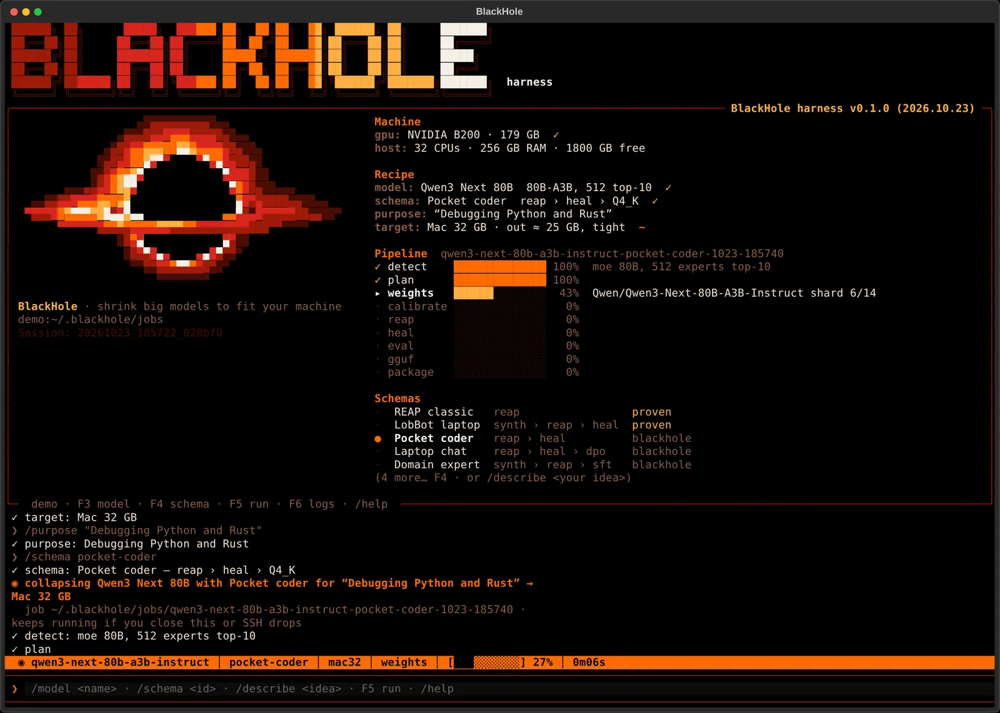
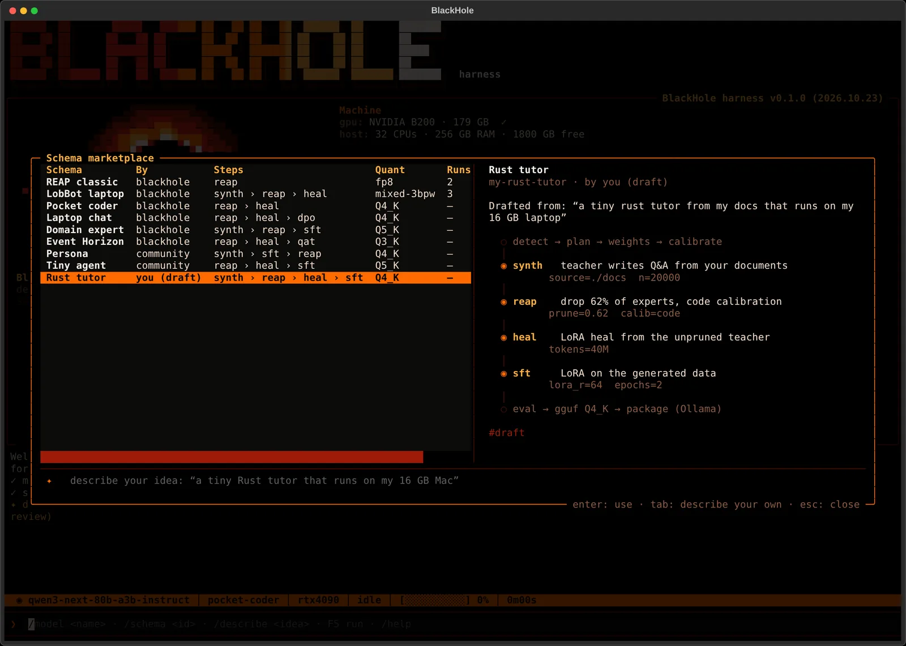

<title>BlackHole-Harness</title>
<meta name="claude:viewport-fit-sides" content="cover">
<meta name="description" content="Shrink any open-weight model until it runs on your own PC. Auto-detect, REAP pruning, distillation heal and 4-bit quant, driven from a TUI on a rented GPU.">
<link rel="preconnect" href="https://fonts.googleapis.com">
<link rel="preconnect" href="https://fonts.gstatic.com" crossorigin>
<link rel="stylesheet" href="https://fonts.googleapis.com/css2?family=Chakra+Petch:wght@500;600;700&family=IBM+Plex+Sans:wght@400;500;600&family=JetBrains+Mono:wght@400;600&display=swap">
<style>
/* Layout: one dark column falling toward the hole. Hero = live terminal render of the
   black hole + banner; then numbers, pipeline, install, schemas, targets. Deliberately
   single-theme: the page is the inside of the TUI. */
:root {
  color-scheme: dark;
  --void: #000000;     /* event horizon: background */
  --ash: #4a0d02;      /* quiet borders */
  --crimson: #9e1b07;  /* frames */
  --redshift: #d7261e; /* warnings, negatives */
  --ember: #ff6a00;    /* primary */
  --flare: #ffae42;    /* highlights */
  --photon: #f5efe6;   /* the bit of white */
  --text: #f0dccb;     /* body */
  --dim: #a2735b;      /* secondary text (lifted from TUI dim for contrast on web) */
  --panel: #0c0402;    /* faint lit surface */
  --display: "Chakra Petch", "Arial Narrow", system-ui, sans-serif;
  --body: "IBM Plex Sans", system-ui, -apple-system, "Segoe UI", sans-serif;
  --mono: "JetBrains Mono", ui-monospace, "SFMono-Regular", Menlo, Consolas, monospace;
  --wrap: 1120px;
}
* { box-sizing: border-box; }
html { background: var(--void); }
body { margin: 0; background: var(--void); color: var(--text); font: 400 17px/1.6 var(--body); }
a { color: var(--flare); text-underline-offset: 3px; }
a:focus-visible, button:focus-visible { outline: 2px solid var(--flare); outline-offset: 3px; }
::selection { background: var(--ember); color: var(--void); }

.wrap { max-width: var(--wrap); margin: 0 auto;
  padding-left: max(16px, env(safe-area-inset-left, 0px));
  padding-right: max(16px, env(safe-area-inset-right, 0px)); }
section { padding-block: 88px 0; }
.eyebrow { font: 600 12px/1 var(--mono); letter-spacing: .14em; text-transform: uppercase; color: var(--ember); display: flex; align-items: center; gap: 10px; }
.eyebrow::before { content: ""; width: 8px; height: 8px; background: var(--ember); border-radius: 50%; box-shadow: 0 0 10px var(--ember); }
h1, h2, h3 { font-family: var(--display); color: var(--photon); text-wrap: balance; margin: 0; letter-spacing: -.01em; }
h2 { font-size: clamp(30px, 4.4vw, 46px); line-height: 1.05; font-weight: 700; margin-top: 16px; max-width: 22ch; }
h3 { font-size: 21px; font-weight: 600; line-height: 1.2; }
p { margin: 0; }
.lede { color: var(--text); max-width: 62ch; margin-top: 18px; }
.muted { color: var(--dim); }
code, .mono { font-family: var(--mono); font-size: .88em; }

/* ── nav ───────────────────────────────────────── */
.top { position: sticky; top: env(safe-area-inset-top, 0px); z-index: 5; background: rgba(0,0,0,.86); backdrop-filter: blur(6px); border-bottom: 1px solid var(--ash); }
body::before { content: ""; position: fixed; inset: 0 0 auto; height: env(safe-area-inset-top, 0px); z-index: 10; background: var(--void); }
.top .wrap { display: flex; align-items: center; justify-content: space-between; gap: 16px; height: 56px; }
.brand { font: 700 18px/1 var(--display); color: var(--photon); text-decoration: none; display: flex; align-items: center; gap: 10px; letter-spacing: .02em; }
.brand i { width: 18px; height: 18px; border-radius: 50%; background: var(--void); box-shadow: 0 0 0 2px var(--flare), 0 0 10px 3px var(--ember), 0 0 22px 6px var(--crimson); }
.brand b { color: var(--ember); font-weight: 700; }
.top nav { display: flex; gap: 22px; font: 500 14px/1 var(--mono); }
.top nav a { color: var(--dim); text-decoration: none; }
.top nav a:hover { color: var(--flare); }
@media (max-width: 720px) { .top nav a:not(.gh) { display: none; } }

/* ── hero ──────────────────────────────────────── */
.hero { padding-block: 48px 0; }
.banner { font: 400 var(--bfs, 13px)/1 var(--mono); white-space: pre; margin: 0; letter-spacing: 0; overflow: hidden; }
.banner .tag { color: var(--photon); font-weight: 600; }
.hero-grid { display: grid; grid-template-columns: minmax(0, 1fr) minmax(0, 1.05fr); gap: 40px; align-items: center; margin-top: 34px; }
.hero h1 { font-size: clamp(38px, 6vw, 68px); line-height: .98; font-weight: 700; }
.hero h1 em { font-style: normal; color: var(--ember); }
.hero .lede { font-size: 18px; }
.hole { margin: 0; font: 400 var(--hfs, 11px)/1 var(--mono); white-space: pre; justify-self: center; letter-spacing: 0; }
.hole span { display: inline; }
.cta { display: flex; flex-wrap: wrap; gap: 12px; margin-top: 30px; align-items: stretch; }
.cmd { display: flex; align-items: center; gap: 12px; background: var(--panel); border: 1px solid var(--crimson); padding: 12px 12px 12px 16px; font: 400 15px/1.2 var(--mono); color: var(--photon); min-width: 0; max-width: 100%; }
.cmd .p { color: var(--ember); }
.cmd code { font-size: inherit; overflow-x: auto; white-space: nowrap; }
.copy { font: 600 12px/1 var(--mono); text-transform: uppercase; letter-spacing: .1em; background: transparent; color: var(--flare); border: 1px solid var(--ash); padding: 8px 10px; cursor: pointer; flex: none; }
.copy:hover { background: var(--ember); color: var(--void); border-color: var(--ember); }
.btn { display: inline-flex; align-items: center; font: 600 15px/1 var(--mono); padding: 0 20px; min-height: 48px; background: var(--ember); color: var(--void); text-decoration: none; }
.btn:hover { background: var(--flare); }
.status { margin-top: 18px; font: 400 13px/1.5 var(--mono); color: var(--dim); }
.status b { color: var(--flare); font-weight: 600; }

/* ── facts strip ───────────────────────────────── */
.facts { margin-top: 64px; border-block: 1px solid var(--ash); }
.facts .wrap { display: grid; grid-template-columns: repeat(4, minmax(0, 1fr)); }
.fact { padding-block: 22px; padding-right: 16px; }
.fact + .fact { border-left: 1px solid var(--ash); padding-left: 20px; }
.fact .n { font: 700 30px/1 var(--display); color: var(--photon); font-variant-numeric: tabular-nums; }
.fact .n small { font-size: 16px; color: var(--ember); margin-left: 2px; }
.fact .l { font-size: 14px; color: var(--dim); margin-top: 8px; }
@media (max-width: 760px) {
  .facts .wrap { grid-template-columns: repeat(2, minmax(0, 1fr)); }
  .fact:nth-child(3) { border-left: 0; padding-left: 0; }
  .fact:nth-child(n+3) { border-top: 1px solid var(--ash); }
}

/* ── results chart ─────────────────────────────── */
.chart { margin-top: 40px; display: grid; gap: 34px; }
.model h3 { display: flex; flex-wrap: wrap; align-items: baseline; gap: 4px 12px; }
.model h3 span { font: 400 13px/1 var(--mono); color: var(--dim); }
.rows { margin-top: 14px; display: grid; gap: 10px; }
.row { display: grid; grid-template-columns: 210px minmax(0, 1fr) 118px; gap: 16px; align-items: center; }
.row .name { font-size: 14px; color: var(--text); line-height: 1.3; }
.row .name b { color: var(--photon); font-weight: 600; display: block; }
.track { position: relative; height: 28px; background: repeating-linear-gradient(90deg, transparent 0 calc(10% - 1px), #1a0703 calc(10% - 1px) 10%); }
.bar { height: 100%; width: var(--w); background: var(--ash); display: flex; align-items: center; }
.bar.ours { background: linear-gradient(90deg, var(--crimson), var(--ember) 70%, var(--flare)); box-shadow: 0 0 18px rgba(255,106,0,.35); }
.bar.old { background: var(--crimson); }
.gb { position: absolute; top: 50%; transform: translateY(-50%); left: calc(var(--w) + 10px); font: 600 14px/1 var(--mono); color: var(--photon); font-variant-numeric: tabular-nums; white-space: nowrap; }
.row.full .gb { left: auto; right: 10px; color: var(--photon); }
.kl { font: 400 13px/1 var(--mono); color: var(--dim); font-variant-numeric: tabular-nums; text-align: right; white-space: nowrap; }
.kl b { font-weight: 600; }
.kl.good b { color: var(--flare); }
.kl.bad b { color: var(--redshift); }
.axis { display: grid; grid-template-columns: 210px minmax(0, 1fr) 118px; gap: 16px; font: 400 12px/1 var(--mono); color: var(--dim); }
.axis div { display: flex; justify-content: space-between; font-variant-numeric: tabular-nums; }
.note { margin-top: 26px; font-size: 14px; color: var(--dim); max-width: 75ch; }
@media (max-width: 680px) {
  .row, .axis { grid-template-columns: minmax(0, 1fr) auto; gap: 6px 12px; }
  .row .name { grid-column: 1 / -1; }
  .axis > span:first-child { display: none; }
  .axis > span:last-child { display: none; }
}

.lessons { margin-top: 44px; display: grid; grid-template-columns: repeat(3, minmax(0, 1fr)); gap: 0; border-top: 1px solid var(--ash); }
.lesson { padding: 20px 20px 0 0; }
.lesson + .lesson { padding-left: 20px; border-left: 1px solid var(--ash); }
.lesson .tag { font: 600 11px/1 var(--mono); letter-spacing: .12em; text-transform: uppercase; }
.lesson .tag.win { color: var(--flare); }
.lesson .tag.loss { color: var(--redshift); }
.lesson p { margin-top: 10px; font-size: 15px; }
@media (max-width: 760px) {
  .lessons { grid-template-columns: minmax(0, 1fr); }
  .lesson + .lesson { padding-left: 0; border-left: 0; border-top: 1px solid var(--ash); margin-top: 20px; }
}

/* ── pipeline ──────────────────────────────────── */
.pipe { margin-top: 40px; list-style: none; padding: 0; display: grid; grid-template-columns: repeat(4, minmax(0, 1fr)); gap: 1px; background: var(--ash); border: 1px solid var(--ash); counter-reset: s; }
.pipe li { background: var(--void); padding: 22px 20px 24px; counter-increment: s; }
.pipe li::before { content: counter(s, decimal-leading-zero) "  " attr(data-k); display: block; font: 600 12px/1 var(--mono); color: var(--ember); letter-spacing: .06em; margin-bottom: 14px; white-space: pre; }
.pipe h3 { font-size: 19px; }
.pipe p { margin-top: 8px; font-size: 15px; color: var(--text); }
@media (max-width: 900px) { .pipe { grid-template-columns: repeat(2, minmax(0, 1fr)); } }
@media (max-width: 520px) { .pipe { grid-template-columns: minmax(0, 1fr); } }

/* ── terminal / screenshots ────────────────────── */
.split { display: grid; grid-template-columns: minmax(0, .9fr) minmax(0, 1.1fr); gap: 40px; margin-top: 40px; align-items: start; }
@media (max-width: 900px) { .split { grid-template-columns: minmax(0, 1fr); } }
.term { border: 1px solid var(--crimson); background: var(--panel); }
.term .bar-t { display: flex; justify-content: space-between; border-bottom: 1px solid var(--ash); padding: 8px 14px; font: 400 12px/1 var(--mono); color: var(--dim); }
.term pre { margin: 0; padding: 18px; overflow-x: auto; font: 400 14px/1.75 var(--mono); color: var(--photon); }
.term .c { color: var(--dim); }
.term .p { color: var(--ember); }
.term .o { color: var(--flare); }
.shot { margin: 0; border: 1px solid var(--ash); background: #050100; }
.shot img { display: block; width: 100%; height: auto; }
.shot figcaption { font: 400 13px/1.5 var(--mono); color: var(--dim); padding: 10px 14px; border-top: 1px solid var(--ash); }
.steps { list-style: none; padding: 0; margin: 24px 0 0; display: grid; gap: 18px; }
.steps li { display: grid; grid-template-columns: 34px minmax(0, 1fr); gap: 12px; }
.steps li span { font: 700 18px/1.3 var(--display); color: var(--ember); }
.steps li p { font-size: 15px; }
.steps b { color: var(--photon); font-weight: 600; }

/* ── schemas ───────────────────────────────────── */
.toml { counter-reset: ln; }
.toml .k { color: var(--flare); }
.toml .s { color: var(--text); }
.toml .h { color: var(--ember); }
.toml .c { color: var(--dim); }
.ask { margin-top: 18px; border-left: 2px solid var(--ember); padding: 4px 0 4px 16px; font-size: 15px; }
.ask q { color: var(--photon); font-family: var(--mono); font-size: 14px; }
.chips { display: flex; flex-wrap: wrap; gap: 8px; margin-top: 14px; }
.chip { font: 400 13px/1 var(--mono); border: 1px solid var(--ash); padding: 7px 10px; color: var(--text); }
.chip b { color: var(--flare); font-weight: 600; }

/* ── targets ───────────────────────────────────── */
.targets { margin-top: 36px; display: grid; grid-template-columns: repeat(4, minmax(0, 1fr)); border-top: 1px solid var(--ash); border-left: 1px solid var(--ash); }
.t { border-right: 1px solid var(--ash); border-bottom: 1px solid var(--ash); padding: 16px 18px; }
.t b { display: block; font: 600 16px/1.2 var(--display); color: var(--photon); }
.t span { font: 400 13px/1.4 var(--mono); color: var(--dim); }
.t span i { font-style: normal; color: var(--flare); }
@media (max-width: 760px) { .targets { grid-template-columns: repeat(2, minmax(0, 1fr)); } }

/* ── footer ────────────────────────────────────── */
.end { margin-top: 110px; border-top: 1px solid var(--ash); }
.end .wrap { padding-block: 36px 48px; display: flex; flex-wrap: wrap; justify-content: space-between; gap: 20px; font: 400 13px/1.6 var(--mono); color: var(--dim); }
.end a { color: var(--dim); }
.end a:hover { color: var(--flare); }

@media (max-width: 900px) {
  .hero-grid { grid-template-columns: minmax(0, 1fr); }
  .hole { order: -1; }
}
@media (max-width: 520px) { .cmd { font-size: 13px; gap: 8px; padding-left: 12px; } }
@media (prefers-reduced-motion: reduce) { * { scroll-behavior: auto !important; } }
</style>

<header class="top">
  <div class="wrap">
    <a class="brand" href="#top" aria-label="BlackHole-Harness home"><i aria-hidden="true"></i>BlackHole<b>·</b>Harness</a>
    <nav aria-label="Sections">
      <a href="#results">results</a>
      <a href="#how">how it works</a>
      <a href="#install">install</a>
      <a href="#schemas">schemas</a>
      <a class="gh" href="https://github.com/OliverVillson/BlackHole-Harness">github ↗</a>
    </nav>
  </div>
</header>

<main id="top">
  <div class="hero">
    <div class="wrap">
      <pre class="banner" id="banner" aria-label="BLACKHOLE harness"></pre>
      <div class="hero-grid">
        <div>
          <h1>Collapse any open model until it fits <em>your&nbsp;machine</em>.</h1>
          <p class="lede">BlackHole-Harness takes a big open-weight model, works out what it is, and shrinks it: expert or neuron pruning for what you actually use it for, distillation to heal it, then 4-bit weights. You get a GGUF that runs on a 12&nbsp;GB graphics card or a 32&nbsp;GB Mac.</p>
          <div class="cta">
            <div class="cmd"><span class="p">$</span><code id="install-cmd">pipx install blackhole-harness</code><button class="copy" type="button" data-copy="install-cmd" id="copy-hero">copy</button></div>
            <a class="btn" href="#results">See the numbers</a>
          </div>
          <p class="status"><b>early preview</b> · open source, Apache-2.0 · first release lands with the public repo</p>
        </div>
        <pre class="hole" id="hole" role="img" aria-label="A black hole drawn in orange and red terminal blocks, with a tilted accretion disk"></pre>
      </div>
    </div>
  </div>

  <div class="facts" aria-label="Headline numbers">
    <div class="wrap">
      <div class="fact"><div class="n">57<small>→</small>10.4<small>GB</small></div><div class="l">Qwen3-30B-A3B, measured on a B200</div></div>
      <div class="fact"><div class="n">0.042</div><div class="l">KL to the original at that size, lower is better</div></div>
      <div class="fact"><div class="n">1<small>line</small></div><div class="l">to install; one more rents the GPU</div></div>
      <div class="fact"><div class="n">any<small>model</small></div><div class="l">Hugging Face id or local folder, MoE or dense</div></div>
    </div>
  </div>

  <section id="results">
    <div class="wrap">
      <div class="eyebrow">Measured, not promised</div>
      <h2>Smaller and closer to the original than the old default</h2>
      <p class="lede">Every recipe ships with the run that justifies it. These come from B200 runs on 23 October 2026. Quality is KL divergence from the full model on held-out answers it wrote itself; the default recipes have to stay at or under 0.10 to pass.</p>

      <div class="chart">
        <div class="model">
          <h3>Qwen3-30B-A3B <span>mixture of experts · 128 experts, 8 active</span></h3>
          <div class="rows">
            <div class="row full"><div class="name"><b>Original</b>bf16, all experts</div><div class="track"><div class="bar" style="--w:100%"></div><span class="gb" style="--w:100%">57 GB</span></div><div class="kl">KL <b>0</b></div></div>
            <div class="row"><div class="name"><b>Previous default</b>keep 50% experts, int8</div><div class="track"><div class="bar old" style="--w:24%"></div><span class="gb" style="--w:24%">13.7 GB</span></div><div class="kl bad">KL <b>0.158</b></div></div>
            <div class="row"><div class="name"><b>BlackHole default</b>keep 75% experts, int4</div><div class="track"><div class="bar ours" style="--w:18.2%"></div><span class="gb" style="--w:18.2%">10.4 GB</span></div><div class="kl good">KL <b>0.042</b></div></div>
          </div>
        </div>
        <div class="model">
          <h3>Qwen3-8B <span>dense</span></h3>
          <div class="rows">
            <div class="row"><div class="name"><b>int8</b>no pruning</div><div class="track"><div class="bar old" style="--w:16.7%"></div><span class="gb" style="--w:16.7%">9.5 GB</span></div><div class="kl good">KL <b>0.0008</b></div></div>
            <div class="row"><div class="name"><b>BlackHole default</b>int4</div><div class="track"><div class="bar ours" style="--w:10.7%"></div><span class="gb" style="--w:10.7%">6.1 GB</span></div><div class="kl good">KL <b>0.070</b></div></div>
          </div>
        </div>
        <div class="axis" aria-hidden="true"><span></span><div><span>0</span><span>10</span><span>20</span><span>30</span><span>40</span><span>50 GB</span></div><span></span></div>
      </div>
      <p class="note">Same scale for every bar. Round-to-nearest quantisation; a GPTQ-style quantiser is next and should cut the int4 error further. Calibration uses 64 sequences, which scored as well as 256.</p>

      <div class="lessons">
        <div class="lesson"><span class="tag win">kept</span><p>For MoE, prune a quarter to three-eighths of the experts, then 4 bits. It beat every mix of bit widths we tried at the same size.</p></div>
        <div class="lesson"><span class="tag loss">dropped</span><p>Per-expert bit widths, dropping whole layers, and int3 on dense models all lost. They stay in the lab, not in the defaults.</p></div>
        <div class="lesson"><span class="tag win">kept</span><p>For dense models below about 6&nbsp;GB, prune 25% of the neurons and heal with real distillation: 5.4&nbsp;GB at KL 0.27, ahead of int3.</p></div>
      </div>
    </div>
  </section>

  <section id="how">
    <div class="wrap">
      <div class="eyebrow">The pipeline</div>
      <h2>What happens between a Hugging Face id and a file you can run</h2>
      <ol class="pipe">
        <li data-k="model.detect"><h3>Detect</h3><p>Reads the config and weight index without downloading weights: family, dense or MoE, expert count, size, and whether the result can fit your target.</p></li>
        <li data-k="data.teacher_gen"><h3>Calibrate</h3><p>The full model answers prompts about your purpose, like "Debugging Python and Rust". Those answers become the yardstick.</p></li>
        <li data-k="score.reap"><h3>Score</h3><p>REAP measures how much each expert, or each neuron in a dense model, contributes on that text. Grouped matmuls make it 2.8× faster.</p></li>
        <li data-k="prune.reap"><h3>Prune</h3><p>Drops what your purpose doesn't use. Critical neurons are protected so the model doesn't fall apart.</p></li>
        <li data-k="train.heal"><h3>Heal</h3><p>Distils the pruned model back toward the original with LoRA, on the teacher's own answers.</p></li>
        <li data-k="quant.gguf"><h3>Quantise</h3><p>4-bit weights with an importance matrix from your purpose, head kept at 8 bits.</p></li>
        <li data-k="eval.agreement"><h3>Gate</h3><p>Checks KL against held-out teacher answers and the real memory footprint. A recipe fails loudly instead of shipping a broken model.</p></li>
        <li data-k="package.gguf"><h3>Package</h3><p>A GGUF plus an Ollama Modelfile and a receipt of every number the run produced.</p></li>
      </ol>
    </div>
  </section>

  <section id="install">
    <div class="wrap">
      <div class="eyebrow">Run it</div>
      <h2>Your laptop drives, a rented GPU does the work</h2>
      <div class="split">
        <div>
          <div class="term">
            <div class="bar-t"><span>~/ on your laptop</span><span>zsh</span></div>
<pre><span class="p">$</span> pipx install blackhole-harness
<span class="p">$</span> blackhole up --provider nebius --gpu b200 --yes
<span class="c">  prices first; rents only with --yes</span>
<span class="o">  ✓ b200 ready · harness installed</span>
<span class="p">$</span> blackhole ssh
<span class="c">  the TUI opens on the VM</span>
<span class="p">$</span> blackhole down --keep-disk
<span class="c">  stops billing, keeps the compile cache</span></pre>
          </div>
          <ol class="steps">
            <li><span>1</span><p><b>Install</b> on any machine with Python. Nothing heavy runs locally.</p></li>
            <li><span>2</span><p><b>Rent a GPU.</b> Nebius by default, with evroc and Lambda adapters. You see the hourly price before anything is rented.</p></li>
            <li><span>3</span><p><b>Pick a model and a recipe</b> in the TUI. Jobs run detached, so a dropped SSH connection doesn't kill a run. Reconnect and it picks up the log.</p></li>
          </ol>
        </div>
        <figure class="shot">
          
          <figcaption>Qwen3 Next 80B, Pocket coder recipe, aimed at a 32 GB Mac. Demo mode.</figcaption>
        </figure>
      </div>
    </div>
  </section>

  <section id="schemas">
    <div class="wrap">
      <div class="eyebrow">Schemas</div>
      <h2>Recipes are files you can read, share and fork</h2>
      <div class="split">
        <div class="term">
          <div class="bar-t"><span>schemas/moe-prune-int4.toml</span><span>blackhole/v1</span></div>
<pre class="toml"><span class="k">id</span> = <span class="s">"blackhole/moe-prune-int4"</span>
<span class="k">title</span> = <span class="s">"Prune a little, quantise to 4 bits"</span>

<span class="h">[targets]</span>
<span class="k">architectures</span> = [<span class="s">"moe"</span>]

<span class="h">[inputs.purpose]</span>
<span class="k">type</span> = <span class="s">"text"</span>
<span class="k">help</span> = <span class="s">"What should the model be good at?"</span>

<span class="h">[[stage]]</span>
<span class="k">kind</span> = <span class="s">"data.teacher_gen"</span>
<span class="k">samples</span> = 64

<span class="h">[[stage]]</span>
<span class="k">kind</span> = <span class="s">"prune.reap"</span>
<span class="k">ratio</span> = <span class="s">"${inputs.prune}"</span>   <span class="c"># 0.25 by default</span>

<span class="h">[[stage.gates]]</span>
<span class="k">metric</span> = <span class="s">"kl"</span>
<span class="k">op</span> = <span class="s">"&lt;="</span>
<span class="k">value</span> = 0.15</pre>
        </div>
        <div>
          <p class="lede" style="margin-top:0">A schema is a short TOML file: which models it suits, what it asks you, the stages it runs, and the quality gates it must pass. Use the proven defaults, grab one from the marketplace, or write your own.</p>
          <div class="chips" aria-label="Built-in schemas">
            <span class="chip"><b>moe-prune-int4</b> MoE default</span>
            <span class="chip"><b>dense-prune-int4</b> dense default</span>
            <span class="chip"><b>laptop-moe-gguf</b></span>
            <span class="chip"><b>reap-purpose</b></span>
            <span class="chip"><b>dense-horizon-qat</b></span>
            <span class="chip"><b>lab/</b> experiments</span>
          </div>
          <h3 style="margin-top:36px">Or describe it in words</h3>
          <p class="ask"><q>Keep it great at SQL, drop everything else, it has to fit my 4070.</q></p>
          <p style="margin-top:14px;font-size:15px">Claude or GPT drafts the schema from your words, the harness lints it against the stages that actually exist, and you review it before anything runs. Bring your own API key.</p>
          <figure class="shot" style="margin-top:24px">
            
            <figcaption>Describing a schema in the TUI.</figcaption>
          </figure>
        </div>
      </div>
    </div>
  </section>

  <section id="targets">
    <div class="wrap">
      <div class="eyebrow">Targets</div>
      <h2>Tell it the machine, it sizes the model</h2>
      <p class="lede">Pick where the model will live. Detection checks the fit before a run starts, and the footprint gate checks it again at the end, context window and KV cache included.</p>
      <div class="targets">
        <div class="t"><b>RTX 3060</b><span>12 GB · <i>11 GB</i> budget</span></div>
        <div class="t"><b>RTX 4070</b><span>12 GB · <i>11 GB</i> budget</span></div>
        <div class="t"><b>RTX 4090</b><span>24 GB · <i>22 GB</i> budget</span></div>
        <div class="t"><b>RTX 5090</b><span>32 GB · <i>30 GB</i> budget</span></div>
        <div class="t"><b>Mac 16 GB</b><span>unified · <i>11 GB</i> budget</span></div>
        <div class="t"><b>Mac 32 GB</b><span>unified · <i>24 GB</i> budget</span></div>
        <div class="t"><b>Mac 64 GB</b><span>unified · <i>50 GB</i> budget</span></div>
        <div class="t"><b>CPU, 32 GB</b><span>system RAM · <i>26 GB</i> budget</span></div>
      </div>
    </div>
  </section>

  <section>
    <div class="wrap">
      <div class="cta" style="margin-top:0">
        <div class="cmd"><span class="p">$</span><code id="install-cmd-2">pipx install blackhole-harness</code><button class="copy" type="button" data-copy="install-cmd-2" id="copy-foot">copy</button></div>
        <a class="btn" href="https://github.com/OliverVillson/BlackHole-Harness">Star on GitHub</a>
      </div>
    </div>
  </section>
</main>

<footer class="end">
  <div class="wrap">
    <span>BlackHole-Harness · blackholeharness.dev · Apache-2.0</span>
    <span>Built on REAP expert pruning. Numbers from B200 runs, 2026-10-23.</span>
  </div>
</footer>

<script>
(() => {
  const HEAT = ["#4a0d02", "#9e1b07", "#d7261e", "#ff6a00", "#ffae42", "#f5efe6"];
  const GRAD = ["#9e1b07", "#d7261e", "#d7261e", "#ff6a00", "#ff6a00", "#ffae42", "#ffae42", "#f5efe6"];
  const BANNER = [
"██████╗ ██╗      █████╗  ██████╗██╗  ██╗██╗  ██╗ ██████╗ ██╗     ███████╗",
"██╔══██╗██║     ██╔══██╗██╔════╝██║ ██╔╝██║  ██║██╔═══██╗██║     ██╔════╝",
"██████╔╝██║     ███████║██║     █████╔╝ ███████║██║   ██║██║     █████╗  ",
"██╔══██╗██║     ██╔══██║██║     ██╔═██╗ ██╔══██║██║   ██║██║     ██╔══╝  ",
"██████╔╝███████╗██║  ██║╚██████╗██║  ██╗██║  ██║╚██████╔╝███████╗███████╗",
"╚═════╝ ╚══════╝╚═╝  ╚═╝ ╚═════╝╚═╝  ╚═╝╚═╝  ╚═╝ ╚═════╝ ╚══════╝╚══════╝"];
  const esc = s => s.replace(/&/g, "&amp;").replace(/</g, "&lt;");

  // banner: solid strokes take the heat gradient by column, shadow strokes stay ash
  const W = BANNER[0].length;
  let b = "";
  BANNER.forEach((line, y) => {
    let run = "", col = null;
    const flush = () => { if (run) b += col ? `<span style="color:${col}">${esc(run)}</span>` : run; run = ""; };
    [...line].forEach((ch, x) => {
      const c = ch === "█" ? GRAD[Math.min(GRAD.length - 1, Math.floor(x * GRAD.length / W))] : ch === " " ? null : HEAT[0];
      if (c !== col) { flush(); col = c; }
      run += ch;
    });
    flush();
    if (y === BANNER.length - 2) b += `  <span class="tag">harness</span>`;
    b += "\n";
  });
  const banner = document.getElementById("banner");
  banner.innerHTML = b.trimEnd();

  // the hole: same lensing model as the TUI's art.py, sampled onto half-block cells
  const DIN = 1.4, DOUT = 3.1, TILT = 0.17;
  function intensity(x, y, t) {
    const r = Math.hypot(x, y);
    if (y >= 0) {
      const rho = Math.hypot(x, y / TILT);
      if (rho >= DIN && rho <= DOUT && Math.abs(y) <= 0.62) {
        const phi = Math.atan2(y / TILT, x);
        const fall = (DOUT - rho) / (DOUT - DIN);
        const beam = 1 + 0.45 * (-x / rho);
        const streak = 0.82 + 0.18 * Math.sin(phi * 9 + rho * 6 - t);
        let v = (0.25 + 0.75 * fall ** 1.4) * beam * streak;
        if (r < 1) v *= 1.05;
        return Math.min(v, 1);
      }
    }
    if (r < 1) return 0;
    const ring = Math.exp(-(((r - 1.07) / 0.055) ** 2));
    let halo = 0;
    if (r > 1.08 && r < 2.25) {
      const edge = 1.12 + (y < 0 ? 0.95 : 0.45);
      if (r < edge) {
        const k = (r - 1.08) / (edge - 1.08);
        halo = (1 - k) ** 1.6 * (y < 0 ? 0.85 : 0.5);
        halo *= 1 + 0.35 * (-x / r);
        halo *= 0.85 + 0.15 * Math.sin(Math.atan2(y, x) * 11 + r * 5 - t * 0.6);
      }
    }
    let back = 0;
    if (y < 0) {
      const rho = Math.hypot(x, y / TILT);
      if (rho >= DIN && rho <= DOUT && Math.abs(y) <= 0.62)
        back = 0.55 * (DOUT - rho) / (DOUT - DIN) * (1 + 0.4 * (-x / rho));
    }
    const glow = r < DOUT + 0.3 ? 0.1 * Math.exp(-Math.max(0, r - 1.1) * 1.6) : 0;
    return Math.min(1, Math.max(ring * 0.95, halo, back, glow));
  }
  const CUTS = [0.06, 0.16, 0.3, 0.46, 0.64, 0.82];
  const idx = v => { for (let i = 0; i < CUTS.length; i++) if (v < CUTS[i]) return i; return CUTS.length; };
  const COLS = 64, ROWS = 26;
  function render(t) {
    const ph = ROWS * 2, unit = (COLS / 2) / (DOUT + 0.1);
    const g = [];
    for (let py = 0; py < ph; py++) {
      const l = [];
      for (let px = 0; px < COLS; px++)
        l.push(idx(intensity((px + 0.5 - COLS / 2) / unit, (py + 0.5 - ph / 2) / unit, t)));
      g.push(l);
    }
    let first = g.findIndex(l => l.some(Boolean)), last = g.length - 1;
    while (last > 0 && !g[last].some(Boolean)) last--;
    first = Math.floor(first / 2) * 2; last = Math.floor(last / 2) * 2 + 1;
    let out = "";
    for (let y = first; y < last; y += 2) {
      for (let x = 0; x < COLS; x++) {
        const a = g[y][x], c = g[y + 1][x];
        const ct = a ? HEAT[a - 1] : null, cb = c ? HEAT[c - 1] : null;
        if (!ct && !cb) out += " ";
        else if (ct === cb) out += `<span style="color:${ct}">█</span>`;
        else if (!cb) out += `<span style="color:${ct}">▀</span>`;
        else if (!ct) out += `<span style="color:${cb}">▄</span>`;
        else out += `<span style="color:${ct};background:${cb}">▀</span>`;
      }
      out += "\n";
    }
    return out.trimEnd();
  }
  const hole = document.getElementById("hole");
  hole.innerHTML = render(0);

  // size both pieces of terminal art to their column so they never overflow
  function fit() {
    const bw = banner.parentElement.clientWidth;
    banner.style.setProperty("--bfs", Math.min(14, bw / (W + 11) / 0.6).toFixed(2) + "px");
    const hw = hole.parentElement.clientWidth;
    hole.style.setProperty("--hfs", Math.min(13, hw / COLS / 0.6).toFixed(2) + "px");
  }
  fit();
  addEventListener("resize", fit);

  // the disk turns slowly unless motion is reduced or the hero is off screen
  const still = matchMedia("(prefers-reduced-motion: reduce)");
  let visible = true, t0 = performance.now(), last = 0;
  new IntersectionObserver(e => { visible = e[0].isIntersecting; }).observe(hole);
  function tick(now) {
    if (!still.matches && visible && !document.hidden && now - last > 90) {
      last = now;
      hole.innerHTML = render((now - t0) / 700);
    }
    requestAnimationFrame(tick);
  }
  requestAnimationFrame(tick);

  // copy buttons
  document.querySelectorAll("[data-copy]").forEach(btn => btn.addEventListener("click", () => {
    const el = document.getElementById(btn.dataset.copy);
    const done = () => { btn.textContent = "copied"; setTimeout(() => (btn.textContent = "copy"), 1600); };
    const select = () => { const r = document.createRange(); r.selectNodeContents(el); const s = getSelection(); s.removeAllRanges(); s.addRange(r); btn.textContent = "selected"; setTimeout(() => (btn.textContent = "copy"), 1600); };
    try { navigator.clipboard.writeText(el.textContent).then(done, select); } catch (e) { select(); }
  }));
})();
</script>
